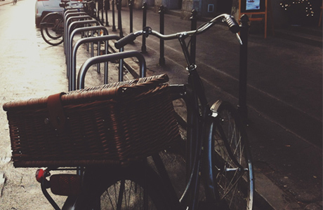

“Gostaria de enfatizar que a complexidade dos estudos efetuados faz parte de um processo de
gerenciamento das novas proposições.”
Andreia Lima
“A palavra deriva do grego; bi (dois) e kyklos (rodas); do inglês bicycle com o diminutivo
francês bicyclette, foi adaptado do castelhano como bicicleta. ”
Diego Aquino
“Com um conjunto de elos metálicos e flexíveis é formado a corrente da bicicleta (corrente de
roletes). A corrente faz a conexão entre a coroa fixada na pedivela.”
Pietro Aquino

“Não tenha nada em sua casa que você
não considere útil ou acredita ser bonito.”